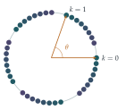

Use De Moivre’s theorem to prove that for any positive integer \(k > 1\), \[\sin(k\theta) = \sin\theta\cos^{k-1}\theta\left(k - \binom k3(\sec^2\theta - 1) + \binom k5(\sec^2\theta - 1)^2 - \cdots\right)\] and find a similar expression for \(\cos(k\theta)\).
Let \(\theta = \cos^{-1}\left(\frac1a\right)\), where \(\theta\) is measured in degrees, and \(a\) is an odd integer greater than \(1\).
Suppose that there is a positive integer \(k\) such that \(\sin(k\theta) = 0\) and \(\sin(m\theta) \neq 0\) for all integers \(m\) with \(0 < m < k\).
Show that it would be necessary to have \(k\) even and \(\cos(\frac12k\theta) = 0\).
Deduce that \(\theta\) is irrational.
Show that if \(\phi = \cot^{-1}\left(\frac1b\right)\), where \(\phi\) is measured in degrees, and \(b\) is an even integer greater than \(1\), then \(\phi\) is irrational.
The hook
The angles you meet in school geometry are usually whole numbers of degrees: \(30^\circ\), \(45^\circ\), \(60^\circ\). Their cosines are numbers like \(\frac{\sqrt3}{2}\) and \(\frac12\). What about going the other way? If the cosine is a simple fraction, such as \(\frac13\), is the angle a nice number of degrees?
The angle \(\cos^{-1}\frac13 \approx 70.528779\ldots^\circ\) appears all over science. It is the angle between two faces of a regular tetrahedron, and its supplement, \(109.47^\circ\), is the angle between the bonds in a methane molecule. This question proves that it is not a rational number of degrees: not \(70\frac12\), not \(\frac{1411}{20}\), not any fraction at all. Its decimal expansion never repeats. This seemingly obscure fact solved one of the famous problems that David Hilbert posed in 1900.
Before you start
Suppose \(\theta\) were rational, say \(\theta = \frac pq\) degrees. Find a positive integer \(k\) with \(\sin(k\theta) = 0\).
Take \(k = 180q\): then \(k\theta = 180p\) degrees, a whole number of half-turns, so \(\sin(k\theta) = 0\). So rational angles always have some multiple that lands on a multiple of \(180^\circ\). To prove \(\theta\) is irrational, it is enough to show that no multiple \(k\theta\) has zero sine. Part (ii) does this by taking the smallest such \(k\), if there is one, and deriving a contradiction: the well-ordering principle of Section 1.3 again.
Working it through
Stage 1 Multiple-angle formulas
Write \(\cos k\theta + \mathrm{i}\sin k\theta = (\cos\theta + \mathrm{i}\sin\theta)^k\), and take out a factor of \(\cos^k\theta\). What is left inside the bracket?
\((\cos\theta + \mathrm{i}\sin\theta)^k = \cos^k\theta\,(1 + \mathrm{i}\tan\theta)^k = \cos^k\theta\sum_{j=0}^{k}\binom kj\mathrm{i}^j\tan^j\theta\). The imaginary part comes from odd \(j = 2m + 1\), where \(\mathrm{i}^j = \mathrm{i}(-1)^m\): \[\begin{aligned} \sin k\theta &= \cos^k\theta\sum_{m}(-1)^m\binom{k}{2m+1}\tan^{2m+1}\theta \\ &= \sin\theta\cos^{k-1}\theta\sum_m(-1)^m\binom{k}{2m+1}\tan^{2m}\theta. \end{aligned}\] Since \(\tan^2\theta = \sec^2\theta - 1\), this is the required formula.■ The real part, from even \(j = 2m\), gives \[\cos k\theta = \cos^k\theta\left(1 - \binom k2(\sec^2\theta - 1) + \binom k4(\sec^2\theta - 1)^2 - \cdots\right).\]
Stage 2 Parity
Now \(\sec\theta = a\), an odd integer, so \(\sec^2\theta - 1 = a^2 - 1\) is an even integer. And \(\theta\) is strictly between \(0^\circ\) and \(90^\circ\), so \(\sin\theta \neq 0\) and \(\cos\theta \neq 0\).
If \(\sin(k\theta) = 0\), the bracket \(k - \binom k3(a^2 - 1) + \cdots\) must be zero. Every term after the first is a multiple of \(a^2 - 1\). What does that tell you about \(k\)?
The bracket is \(k\) plus a sum of multiples of the even number \(a^2 - 1\). If \(k\) were odd, the bracket would be odd, and an odd integer cannot be \(0\). So \(k\) must be even.
Then \(\sin(k\theta) = 2\sin(\frac12k\theta)\cos(\frac12k\theta) = 0\). But \(\frac12k\) is a positive integer smaller than \(k\), so by the minimality of \(k\), \(\sin(\frac12k\theta) \neq 0\). Hence \(\cos(\frac12k\theta) = 0\).■
Stage 3 The contradiction
Apply the cosine formula with \(m = \frac12k\). Why can \(\cos(m\theta)\) never be zero?
By Stage 1, \(\cos(m\theta) = a^{-m}\left(1 - \binom m2(a^2 - 1) + \binom m4(a^2 - 1)^2 - \cdots\right)\). The bracket is \(1\) plus multiples of the even number \(a^2 - 1\), so it is odd, and in particular not zero. So \(\cos(m\theta) \neq 0\), contradicting Stage 2.
Therefore there is no positive integer \(k\) with \(\sin(k\theta) = 0\). (If there were any, there would be a smallest one, and we have just shown that the smallest one cannot exist.) By the observation in Before you start, \(\theta\) cannot be a rational number of degrees.■
Stage 4 The cotangent version
If \(\cot\phi = \frac1b\), what is \(\sec^2\phi - 1\)? Is it even?
\(\tan\phi = b\), so \(\sec^2\phi - 1 = \tan^2\phi = b^2\), which is even (indeed a multiple of \(4\)) since \(b\) is even. Also \(0^\circ < \phi < 90^\circ\), so \(\sin\phi\) and \(\cos\phi\) are non-zero. Exactly the same argument now works: if \(k\) is the smallest positive integer with \(\sin(k\phi) = 0\), the bracket \(k - \binom k3b^2 + \cdots\) must vanish, forcing \(k\) even; then \(\cos(\frac12k\phi) = 0\); but the cosine bracket \(1 - \binom m2b^2 + \cdots\) is odd. Contradiction, so \(\phi\) is irrational.■
For example, \(\cot^{-1}\frac12 = \tan^{-1}2 \approx 63.43^\circ\) is irrational.
Looking back
Rational angles have periodic multiples. That reformulation turned irrationality into a statement about \(\sin(k\theta)\) for all \(k\).
Parity arguments. Working modulo \(2\) showed that certain integers were odd and therefore not zero. Simple, but decisive.
The smallest counterexample. Assuming a smallest \(k\) and showing a smaller one must exist (here \(\frac12k\)) is the well-ordering argument of Chapter 1.
What’s really going on
If \(\theta\) is a rational number of degrees, repeatedly rotating by \(\theta\) eventually returns you to where you started. If \(\theta\) is irrational, you never return, and something remarkable happens: the points \(k\theta\) (taken modulo \(360^\circ\)) spread out evenly around the circle, coming arbitrarily close to every angle. This is the equidistribution theorem, proved independently by Hermann Weyl, Wacław Sierpiński and Piers Bohl around 1910. Figure 5.5.1 shows the first \(40\) multiples of \(\cos^{-1}\frac13\): they are already filling the circle, and none ever repeats.

Hilbert’s third problem
In 1900 David Hilbert listed twenty-three problems for the new century. The third asked: if two polyhedra have the same volume, can one always be cut into finitely many polyhedral pieces and reassembled into the other? (For polygons in the plane the answer is yes: this is the Wallace–Bolyai–Gerwien theorem.) Within a year, Hilbert’s student Max Dehn showed the answer is no: a regular tetrahedron cannot be cut up and reassembled into a cube of the same volume. Dehn’s proof attaches to each polyhedron a quantity built from its edge lengths and dihedral angles, now called the Dehn invariant, which is unchanged by cutting and reassembling; for a cube it is zero, and for a regular tetrahedron it is non-zero precisely because the dihedral angle \(\cos^{-1}\frac13\) is not a rational multiple of \(180^\circ\). That is exactly what this question proves.
Niven’s theorem
How far does this go? In 1956 Ivan Niven proved that if \(\theta\) is a rational number of degrees and \(\cos\theta\) is rational, then \(\cos\theta\) is one of \(0\), \(\pm\frac12\), \(\pm1\). So the only “nice” angles with rational cosines are \(0^\circ\), \(60^\circ\), \(90^\circ\), \(120^\circ\), \(180^\circ\) and their relatives. The proof uses the fact that \(2\cos\theta\) is a root of a monic polynomial with integer coefficients, an algebraic integer, the idea mentioned at the end of Section 1.3.
The thinking skill
To show an integer expression is never zero, show it is always odd: reduce it modulo \(2\).
Combined with a minimal counterexample, this simple idea proved a deep fact. Reducing modulo a small number to rule out an equation is one of the most common moves in number theory, as in Section 1.5.
Try this next
The tetrahedron. Show that the angle between two faces of a regular tetrahedron is \(\cos^{-1}\frac13\), and that the angle between two bonds in a methane molecule (from the centre of a regular tetrahedron to two vertices) is \(\cos^{-1}\left(-\frac13\right)\).
The \(3\)–\(4\)–\(5\) triangle. Show that the smallest angle of a \(3\)–\(4\)–\(5\) triangle is an irrational number of degrees. (Hint: it is \(\cot^{-1}\frac43\); adapt the argument, or consider powers of the Gaussian integer \(4 + 3\mathrm{i}\) and show none is real.)
Why odd \(a\)? What goes wrong in the argument when \(a = 2\)? Is \(\cos^{-1}\frac12\) rational?
Niven for small cases. Find all whole numbers of degrees \(\theta\) between \(0^\circ\) and \(90^\circ\) for which \(\cos\theta\) is rational, and check that your list agrees with Niven’s theorem.
Further reading
Ivan Niven, Irrational Numbers (Mathematical Association of America). Includes Niven’s theorem on rational values of trigonometric functions.
Martin Aigner & Günter Ziegler, Proofs from THE BOOK, chapter on Hilbert’s third problem. A beautiful account of Dehn’s solution.
Benjamin Yandell, The Honors Class: Hilbert’s Problems and Their Solvers (A. K. Peters). The stories behind all twenty-three problems.